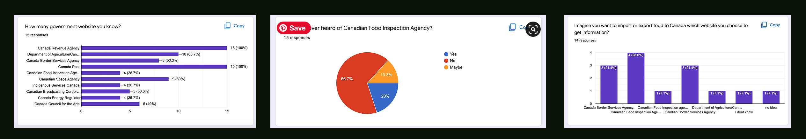
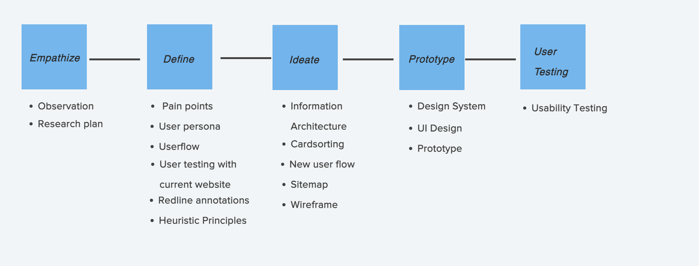
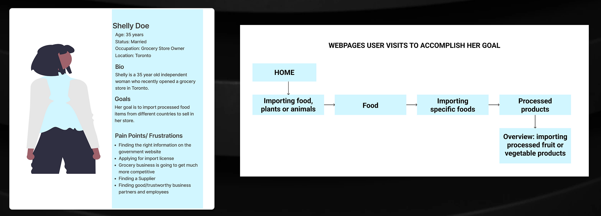
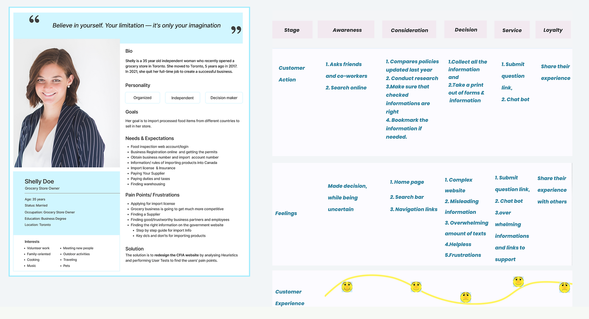
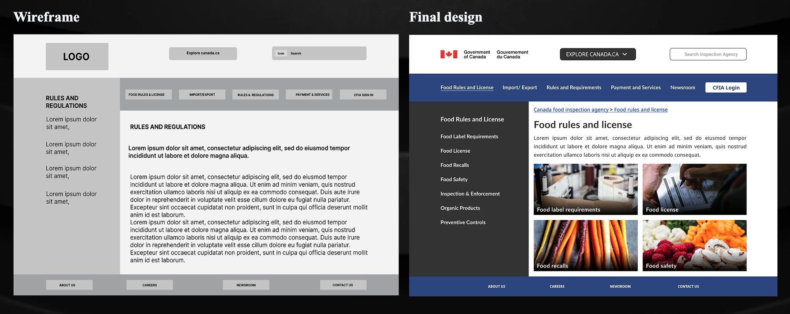

Headers examples
Redesigning CFIA website

My Role - UX Designer
- Improved the User Experience of the webpage and
- I created the design system that you will see in this case study.
Task
- Wireframe,User Research,
- Design system, Prototype
- Analysist
Platform & Time
- Responsive website and
- 4 weeks
The Challenge:
Canadian Food Agency website is one of the most widely accessed website in Canada but it is lacking of user experience Page is outdated.
The Solution:
Finding UI issues with user testing. Improving on or building new features in order to for the website. Converting web users to the app so the people can enjoy better user experience.

I wanted to know How many government website people know so far? -out 15 , only 4 responded that they know CFIA How many people heard of Canadian food Agency?-out 100% , 66.7% responded, that they never heard of CFIA Imagine if you want import/export food to Canada which website you choose?- There was a confusion between CFIA and Canada Border Service-28.6% user said they choose CFIA, 21.4% user said they go for Canada Border Services.
The design process carried out in this research is using the Design Thinking methodology.
I create a proto-persona for the typical user of Canada Food Inspection Agency so that I can understand what are the main frustration that the user has when they use the website.
Current user is a grocery store owner, which means she sells a variety of food items as well as other products. She would like to familiarize herself with the rules and regulations in Canada, when it comes to importing certain kinds of foods into Canada

Based on the card sorting results, I created a new sitemap for the CFIA website The primary and secondary pages are defined in the site map.
Sketch -1 show quick drawing of homepage include logo, menu bar, search bar and primary and secondary navigations and footer
Sketch -2 show quick detailed version of of homepage include global ,Header,Footer nav ,Primary navigation Tabs,Secondary navigation-Heading details,Text,Body Text
